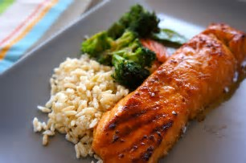
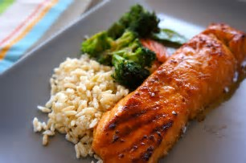

SUGGESTED MEALS
You don't have to eat less, You have to eat right.
PRE-WORKOUT SNACKS
- Apple or Pear
- 3/4 cup Greek yogurt with 1 tablespoon of granola and 1/2 cup of berries
- 2 tablespoons dried fruit with 1 tablespoon unsalted nuts
- 100-cal granola bar
 

PRE-WORKOUT MEALS
- Oatmeal with Peanut Butter and 1/2 cup fruit
- 4 oz Baked Salmon, 3/4 cup brown rice, 1 cup roasted veggies
POST-WORKOUT SNACKS
- 1 Slice whole wheat toast, 1 tablespoon peanut butter and half banana
- 2 Hard-boiled Eggs with 1 slice whole wheat toast
POST-WORKOUT MEALS
- Whole wheat pita with grilled veggies and 2 tablespoons hummus
- Green Protein Smoothie: 2 cups baby spinach, 6 oz nonfat greek yogurt, 1/2 cup organic tofu, 1 cup frozen strawberries, 2 tablespoons chia seeds
- Veggie Omelet with avocado and 1/2 cup roasted potatoes